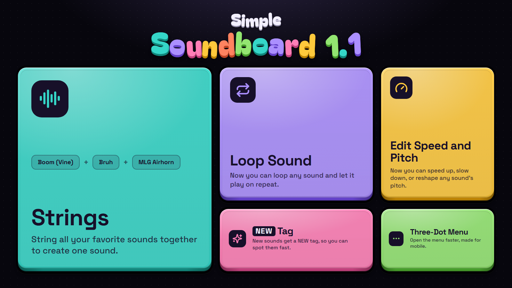

Hi everyone,
I've been working hard on getting this update out ASAP, and I think everybody will really enjoy it. I've added a bunch of new features and sound effects, so enjoy!
1. Strings This is probably the best feature I've added yet. Strings let you combine any sounds you want into one sound. You can add as many sounds as you want, duplicate them, and even use strings inside other strings. It's really fun to play around with.
There is no limit for how many strings you make, you just need a retrac.space account. Your strings will save across all your devices, just like your favorites.
To get started with your first string, find any sound effect, press the 3-Dot-Menu button and select "Create string with this sound."
2. Loop Sound This one was needed. Sometimes you just really want to play a sound effect, over and over again. At first, I was creating Strings with the same sound duplicated, and that got tedious, so that is how Loop Sound was added!
To loop any sound effect, press the 3-Dot-Menu button and select "Loop sound." To stop a sound from looping, you can press 3-Dot-Menu button and select "Stop loop sound," or press the Stop All button.
3. Edit Speed and Pitch This one's just fun. You can now edit any sound effect's Speed and Pitch! You could make "Enrique" faster, "Get Out!" slower, "I got this" deeper, and just about anything. The best part? It saves across your devices, just like Strings and Favorites.
To edit a sound effect's speed and pitch, press the 3-Dot-Menu button and select "Edit Speed and Pitch." A menu will open where you can drag sliders to change how a sound sounds. If you ever want to go back to the original sound, press the 3-Dot-Menu button, select "Edit Speed and Pitch," and press "Reset to normal."
4. New Tag This one is pretty simple. Now, when new sound effects are added to the site, they'll have a NEW tag on them for a few days or weeks. You can also filter sound effects to only show new ones at the top, in the same place as the other filters.
5. 3-Dot-Menu I probably have said the word "3-Dot-Menu" a lot in this change log. But what is the 3-Dot-Menu? The 3-Dot-Menu is a new button on every sound effect that lets you open more options for the sound effect, like creating a String, Looping the sound, and more. I added this because originally you had to right-click a sound effect to open the menu, but that was complicated and impossible to do on mobile and touchscreen.
6. The About Button I've added an About button to every sound effect, where you can see who requested it, when it was added, and more information.
Version 1.1 is a very big update, and I hope everybody enjoys it.
Thank you to everybody who chose to use Simple Soundboard, it really means the world to me.
By the way, I've published Glow , a fun light studio where you can make glowing tubes, neon braids, and more.
Glow is a pretty simple website, but I have a few Projects that I'm cooking up, which will be available in a couple of weeks.
Thanks everyone! :)
Retrac
Let's make some noise